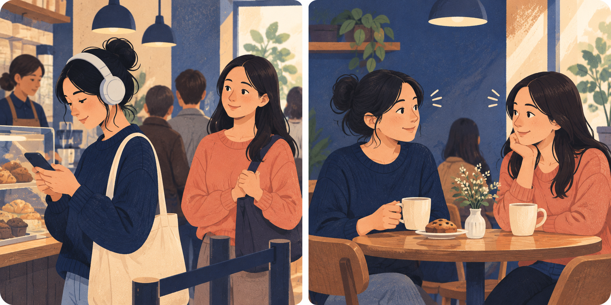
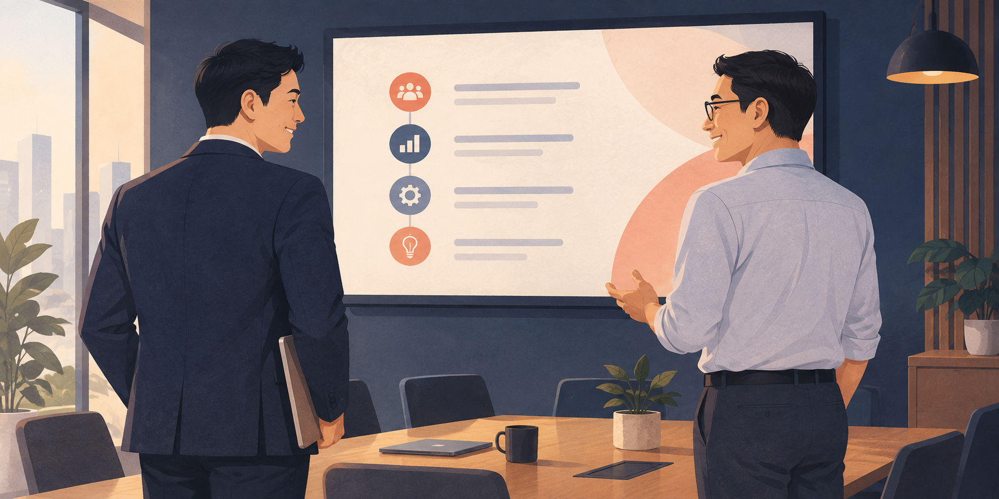
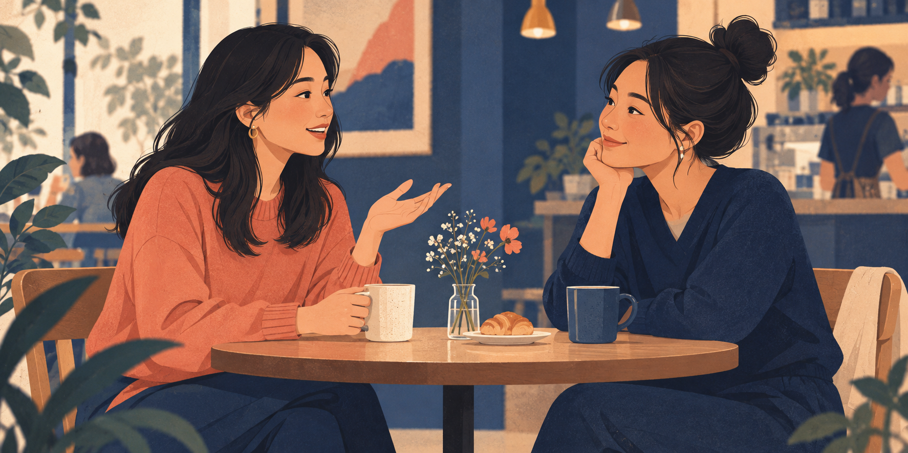
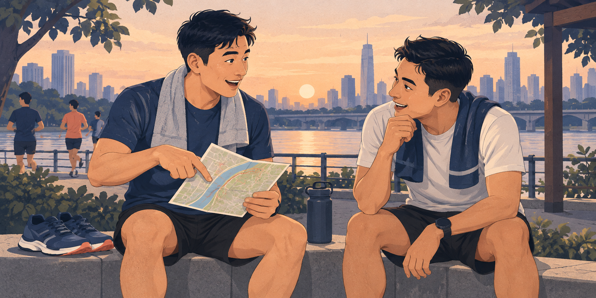
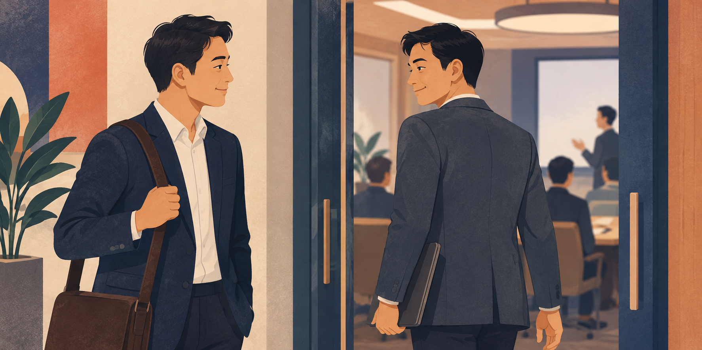

Small Talk Gym
早安，Amir。
🌱
今天不用变得会聊天。只做一组。
今日训练 · 初阶
从共同情境
自然开场
自然开场
你的进度
这周还没完成任何一组
从这一组开始就好。
学习 · Coach
选一个训练等级。
每一阶都有明确技能和题目数。完成前一阶，才会解锁下一阶。
可以开始
初阶：先看，再开口
5 个技能 · 从判断开口讯号，到自然收尾。
0 / 5 个技能0%
初阶会学什么 5 个技能
1．先看开口时机 判断现在适不适合开口。
2．共同情境开场 从眼前发生的事开始。
3．问一句，也给一点自己 让对话来回，不像审问。
4．抓关键词接话 顺着对方刚说的内容走。
5．自然收尾 没接上也可以轻轻离开。
2．共同情境开场 从眼前发生的事开始。
3．问一句，也给一点自己 让对话来回，不像审问。
4．抓关键词接话 顺着对方刚说的内容走。
5．自然收尾 没接上也可以轻轻离开。
🔒 完成初阶后解锁
中阶：让对话走下去
接住关键词、追问、回应、恢复冷场。
🔒 完成中阶后解锁
高阶：复杂社交场合
群体对话、工作社交、判断互动边界。
练习 · Simulator
选一个你想练的场景。
这里不再翻题，而是练一段完整、连续的对话。
日常生活 4 个场景
🍽餐厅等位和同行陌生人开场
↕电梯短暂寒暄
🌳公园／健身房共同情境开场
🐕朋友带来的新朋友加入一段轻对话
工作场合 4 个场景
🏢会议开始前和不熟同事开场
👔面对主管专业自然开场
🤝工作活动认识新同事
社交聚会 4 个场景
🎉朋友聚会认识朋友的朋友
💬同学聚会重新打开话题
🍻小型活动加入一小群人
👋熟人偶遇自然重新开场
专业表达 4 个场景
🗣简短自我介绍留下清楚第一印象
✦会议表达提出观点与理由
🎯面对高管专业、有重点地开场
↗表达不同意见尊重地推进下一步
🔒 先完成初阶第一组
Simulator 即将解锁
先学会一个开场技能，再把它放进真实场景，会更有安全感。
Coach · 初阶 · 技能 1／5
技能：先看开口时机
开口前先看关系、对方状态和当下有没有自然互动。不是每个陌生人都需要聊。
为什么这个技能有用？
它帮你避免硬聊，也让每一次开口更自然、更尊重对方。

什么时候不要硬用？
对方戴耳机、一直看手机、明显赶时间或没有回应时，就先不打扰。
第 1 小题 · 看讯号
你一个人在咖啡店排队。旁边的人戴着耳机、一直看手机，也没有看向你。
这时哪一个做法比较合适？
Coach · 初阶 · 技能 2／5
下一技能：共同情境开场
有了自然互动机会后，从你们此刻都看得到的事开始，不必找聪明话题。
怎么用？
先接住当前发生的事，再留一个容易回答的问题。

什么时候不要硬用？
没有互动机会、对方忙碌或明显封闭时，不需要硬找共同话题。
第 1 小题
会议还有三分钟开始。你刚和旁边新同事互相介绍过，他正看着投影上的议程。
哪一句比较自然？
Coach · 初阶 · 技能 3／5
技能：问一句，也给一点自己
对话不是审问，也不是独白。回答一点自己，再把话传回去。

情境判断
新同事问你：你平时喝咖啡吗？
Coach · 初阶 · 技能 4／5
技能：抓关键词接话
先接住对方刚说的一个词，不急着把话题拉回自己。

情境判断
对方说：我周末去跑步了。
Coach · 初阶 · 技能 5／5
技能：自然收尾
对话不必撑长。知道怎样轻轻结束，下一次才更敢开口。

情境判断
主持人准备开始会议，对方也转向会议室。
Simulator · 跨部门咖啡局
练习那个你本来可能会选择沉默的时刻。
场景铺垫
时刻：大家刚点好饮料、坐下来。熟同事正在和另一位同事聊天。
对方：坐在你旁边的跨部门同事；你们刚互相介绍过，还没有聊起来。
当前对话线：桌上的饮品、今天的安排、彼此的轻量认识。
这次练习：由你先开口。可以从桌上的饮品或今天的安排说起，问一个轻量的问题。
现在有一小段安静。你看到对方点了燕麦拿铁——这就是你的开场时机。
轮到你先说第一句。
🎙
按住说话，说出你的开场。
完成一组
你已经开口了。
这就算完成。
不需要判断自己够不够有趣。只记录真实感觉。
刚才感觉如何？
我的记录
我的训练记录
本周
0 组完成
○ 从情境开场进行中
○ 接住对方的话下一组